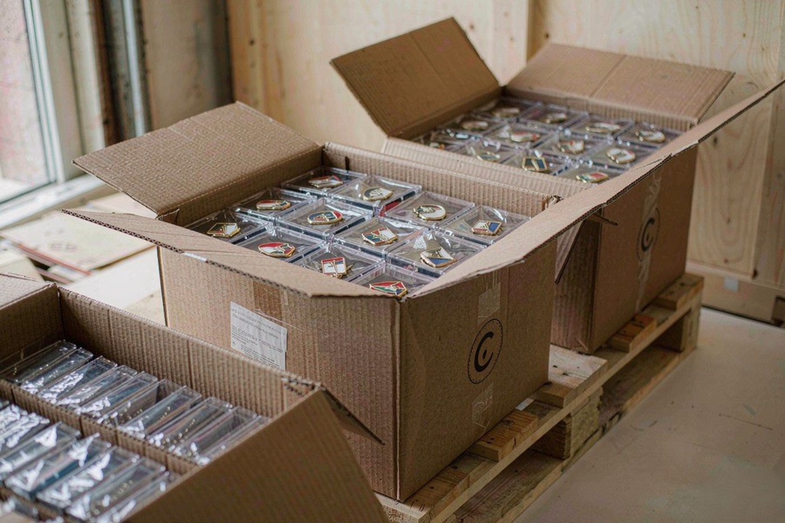
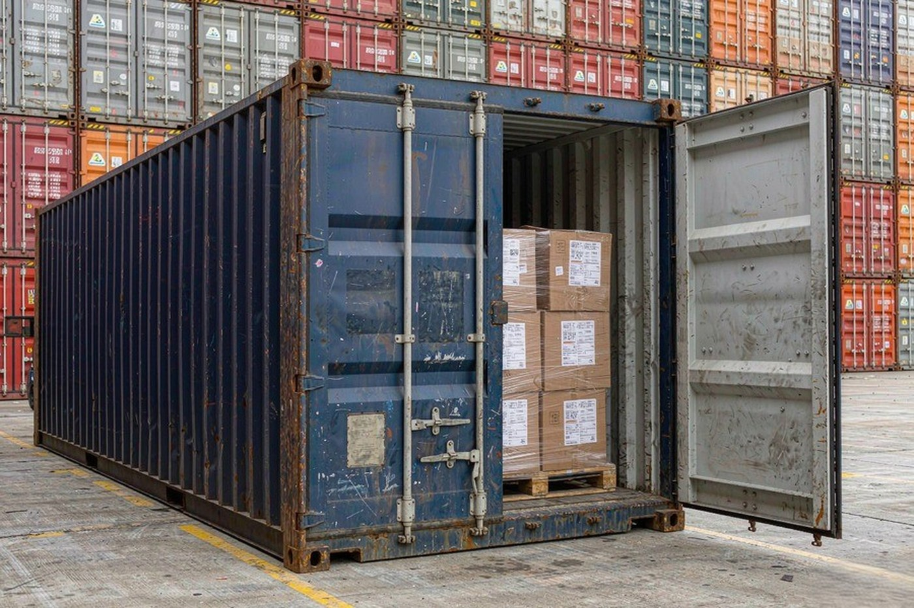

Every quotation we send ends with two letters and a place name. FOB Shanghai, or CIF Los Angeles, or DDP your warehouse. Those three words decide who arranges the freight, who insures the goods, who handles customs clearance on each side of the border, and where the duty lands. They also decide who sees the individual charges.
They are worth understanding before the order is placed rather than after the invoice arrives, because switching a term later is not a formality. This guide covers what each term actually changes, and how to choose.

What each term actually changes
The three terms are defined by the International Chamber of Commerce in a set of rules called Incoterms. The rules describe who does what between the two locations named on the contract. You can read the official text and the full list of rules on the ICC Incoterms 2020 page.
Put simply, here is where the three terms differ.
| FOB | CIF | DDP | |
|---|---|---|---|
| Freight paid by | Seller, to the port of loading | Seller, to the destination port | Seller, to your door |
| Marine insurance | Buyer arranges it | Seller pays the minimum cover | Included in the seller's cover |
| Export clearance | Seller | Seller | Seller |
| Import clearance | Buyer or the buyer's broker | Buyer or the buyer's broker | Seller |
| Duty and import tax | Buyer | Buyer | Seller |
| Risk transfers | On board at the loading port | On board at the loading port | On board at the loading port |
| What the buyer sees | Separate freight and duty invoices | Separate duty invoice | One landed price |
One line in that table is worth pulling out, because it surprises people. Under all three terms the risk of the goods transfers when they are loaded on board at the port of departure. CIF buys you insurance cover over that risk. FOB and DDP do not change who carries it during the sea voyage, they change what happens to the cost of the voyage.
FOB: the simplest term, and the most transparent
FOB means we handle everything up to the point where the goods are loaded onto the vessel at the named port. We export-clear them, we load them, and we sell them to you at that point. From there the freight to your destination, the insurance and the import duty are yours to arrange and to pay.
For a first order this is usually the term we suggest, and the reason is visibility rather than price. You see the goods value, the freight and the duty as three separate numbers, so you can check each one against your own carrier rates and your own duty calculation. Nothing is hidden inside a landed price that you have to take on trust.
The practical downside is that you need a broker on your side who can make the import entry, and that your finance team has to pay two invoices in two countries. For a buyer with no import experience, that is genuinely the hardest term.
CIF: FOB plus insurance across the sea leg
CIF adds one thing to FOB. We pay the freight all the way to the destination port, and we also buy the minimum marine insurance that covers the goods during that voyage. You still clear the import and pay the duty yourself.
The reason to take CIF is that the insurance sits with the party that has the claim. Under FOB, if the vessel is damaged in transit, your insurer and your broker handle the recovery, and the seller has already been paid and has no involvement. Under CIF, the seller holds the policy, so the claim is raised against the seller and dealt with on that side.
For a consignment of pins, which are small, light and easy to replace, this is rarely the deciding factor. It matters more for a heavy, fragile or high value consignment such as a large run of die struck challenge coins.

DDP: one landed price, no separate invoices
DDP puts everything on our side of the quotation. We arrange the carriage to your address, we handle the export clearance, we arrange the import clearance, and we pay the duty. The number on the quotation is the number that lands on your accounts payable.
It sounds simple, and for a buyer without an import department it genuinely is simple. There is no broker to appoint, no duty to calculate, and no second invoice to reconcile.
Two things are worth understanding before you accept a DDP quote. The first is that the duty and the clearance cost are inside the price, which means you cannot see them. If a DDP quote comes back materially cheaper than an FOB quote plus your own estimate of freight and duty, that is a reason to ask us for the breakdown rather than a reason to celebrate. The second is that DDP requires us to be able to arrange clearance in the destination country, which depends on the local rules and on the carrier's service in that country, and on the consignment being large enough to carry the cost of that arrangement.
We will say plainly whether DDP is available for your destination and shipment size. Where it is not, FOB with your own forwarder is the normal answer.
Where the duty number comes from
The term decides who pays the duty. It does not decide how much the duty is. That number comes from the tariff schedule of the country you are importing into, applied to the HS code for the goods.
The HS code, or Harmonized System code, is the international classification that every customs authority in the world builds its schedule from. The World Customs Organization publishes the instrument and the explanatory tools, including the explanatory notes that tell you how headings and subheadings are read. You can find those on the WCO nomenclature page.
If you are importing into the United States, the tariff schedule itself is published by the US International Trade Commission and is searchable online at hts.usitc.gov. Look up the HS code for the product and read the rate for your country of origin from the schedule. We will give you the code we declare on the commercial invoice, so you can check the rate independently rather than taking our word for it.
We do not quote duty rates on this page, and we will not quote them on a quotation either. Rates move with trade policy and they depend on the code and the origin, so any number we printed would be out of date the day after it was written. The published schedule is the source, and it is free to read.
Which one to pick
A practical rule that covers most cases.
- First order, no import experience, small consignment. Ask for DDP and check whether it is available for your destination. If it is, the single landed price removes the most common source of delay.
- You already have a broker or a forwarder. Ask for FOB. You get the freight quoted at cost and you keep control of the carrier and the clearance. This is the term that makes the most sense for a repeat order.
- Large or fragile consignment. Ask for CIF so the marine insurance sits with the party that can raise the claim against the carrier.
- Comparing us against another supplier. Ask every supplier for the same term. A quote on FOB compared against a quote on DDP is not a comparison, because one of them has freight and duty folded into it and the other does not.
The documents that travel with the goods
Whichever term you choose, three documents go with the shipment and they are the same three.
- The commercial invoice states what the goods are, the quantity, the value and the agreed trade term. The HS code appears here.
- The packing list states the cartons, the quantities in each and the weights. It is the document your warehouse works from when the container arrives.
- The transport document, the bill of lading, is the document that transfers the goods. Under FOB and CIF it is what the broker needs to make the import entry.
Our packing and shipping process, including how the cartons are marked and checked before they leave the workshop, is covered in the step-by-step sourcing guide.
Buying the pins is the bigger decision
It is worth saying plainly. The trade term changes who arranges the carriage and who carries the risk, but it does not change what you get in the box. The specification decides that.
If you have not settled the metal, the finish or the size yet, start there instead. Our guide to the base metals we run sets out what each alloy carries in terms of thickness and minimum line width, the twelve plating finishes page covers the surface options and how they are tested, and the design file specification guide tells you what an artwork file needs to contain before we can proof it.
When the specification is settled, tell us the destination country and the delivery address with the enquiry. We will quote all three terms so you can see them side by side, and you can pick from there.